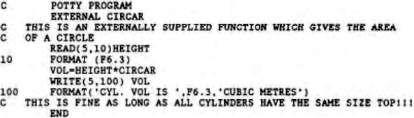

Scorpio News |
January–March 1987 – Volume 1. Issue 1. |
| Page 13 of 63 |
|---|
Equivalence (X1),(X2)....(Xn)
– where X1..Xn are sequences of two or more variables or array elements, separated by commas. Thus,
EQUIVALENCE (GROT(6),THISGROT(3,2))
– allows the two arrays to share space happily.
Variables can also be Equivalenced –
Equivalence (A,D)
– is allowed.
If Equivalence is used to save program space, then make sure that you do not fall into the trap of letting one of the equivalenced variables or array overwrite the other(s) The Equivalence statement is very useful if a program contains intermediate variables or arrays which are not required in later stages of a program.
The final method of space saving is to use the COMMON block statement in which arrays and variables which appear in more than one of the program subroutine are declared as COMMON at the beginning of each:
COMMON /X1/ A(20,40),NASTY(100,2)
– are put in each subroutine to eave a modicum of space.
In a large program this is very handy! In the above example, arrays A and NASTY are stored in a COMMON area called X1. This area is shared by all subroutines in which this COMMON statement appears.
Many functions are provided in the system library and can he called up (as in BASIC) by including their name – for example, SIN, ABS or PEEK (in F80 and ProFortran). But others are not available and have to be provided from another subroutine or external function. The External statement does this by allowing the programmer to specify the name of the external subroutine that does the required job – thus if you wanted to calculate the volume of a cylinder, subroutine which provided the area of the top could be called in the External statement as follows:
Note that if the External statement had been omitted, CIRCAR would have been incorrectly treated as an ordinary REAL variable by the computer.
| Page 13 of 63 |
|---|